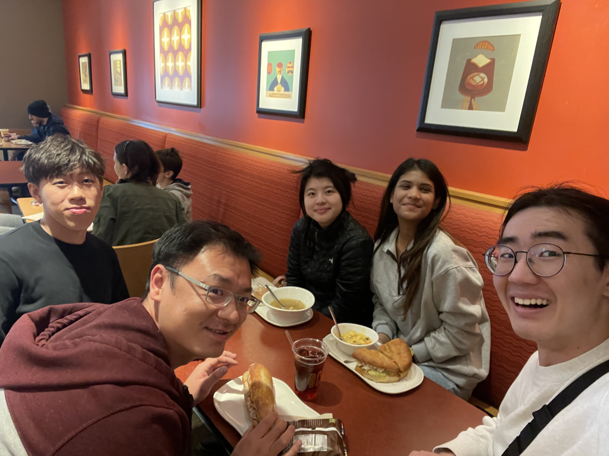
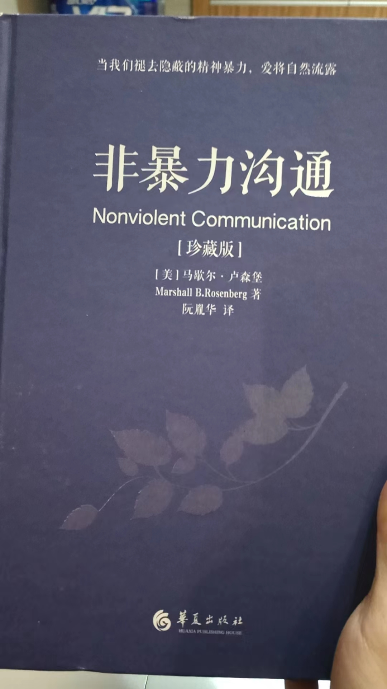
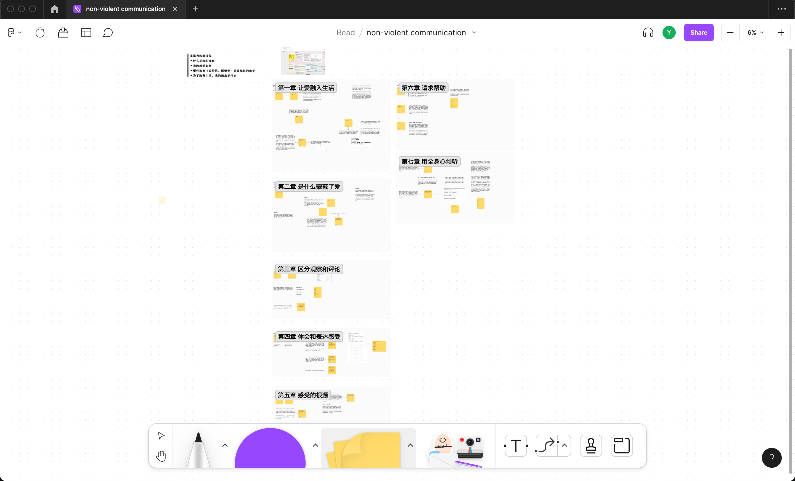
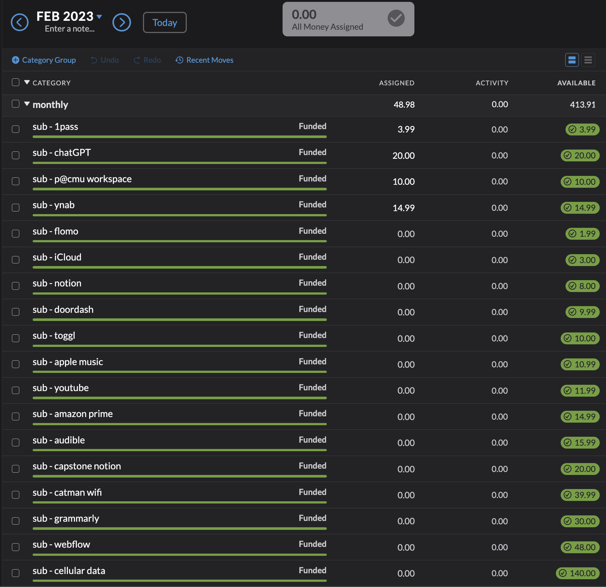
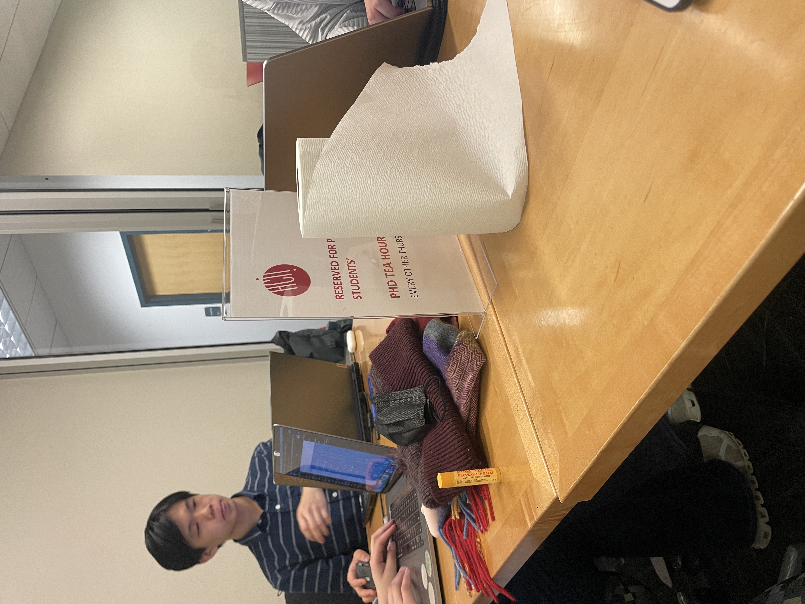

Ongoing Journey - February 2023
Consulting project, tools and goals
 The greater washington county food bank warehouse, still couldn't fiture out why that chair was there
The greater washington county food bank warehouse, still couldn't fiture out why that chair was there
The consulting project client we got this semester is a local food bank, where we were requested to help streamline the registration process of their food drives.
We came to a QR code solution after some research. So now whenever people show up to get food, they simply have to take out their phone and scan the code to register, saves both cost and waiting time.
As we proudly presented the solution to Raja the day after, he listened for a while, scratched his half-bolded head back and forth, looked down at the solution proposal then us, and said with a slow yet disappointing tone
It is an efficient solution, not an effective one though
…Imagine yourself as a waiter who just lost your job, now without a salary or tip, you have to put aside your pride, wait in line for hours just to get basic food to sustain yourself for a week. Now that you are in front of the line, would you prefer a cardboard cutout with a giant QR code, or a person smiling while handing you a warm cookie, asking how your life has been?
I track the time that I spend through toggl, for about two years and I see little improvements in my actual life. Raja’s thought on efficiency + effectiveness lingered in my head, perhaps toggl and time management is only a tool, it was never the end goal.
Wenhao said I never really had an end goal, I chase what people around me want instead. Currently planning on taking another gap semester F23, started asking myself ‘what do I want’ knowing I will be entirely detached from the envrioment of university soon.
Back to the project though, we ended up taking the advice and went with a basic solution. It felt a bit ironic that, after learning Python SQL Ruby on Rails (and many others), the ideal solution for us turns out to be volunteers handing people warm cookies, quite a good lessson on empathy lol.
Our professor heard about us wanting to visit the food bank, drove us there, back, and bought us lunch :')Wenhao, learning too slow, learning too much
Non-violent Communication, Wenhao's reccGot to chat with Wenhao middle of this month, I mentioned this frustration about learning too slowly despite knowing my goal. Showed him how I track articles I read and asked what systems he use, Wenhao slanted his head, thought for a bit and was like
I don’t :D
…
知其然而不知其所以然 was what we came to, instead of learning too slow, I might’ve been learning too much. I read articles that expose me to new ideas, but I rarely stop and study the core concept behind them.
Remember back in middle school we once performed at Disney. While rehearsing at the back side of the stage, I for the first time saw how the stage was being set up. Fast forward to now it felt like the same scene, I only glimpsed at the scene without actually going to the back, learning how it was pieced together.
It’s not only knowing how important something is, and also giving yourself the availability to sit down, the time to learn and condence.
Took the advice and start reading books instead, thinking now, isn't books just a collection of articles lolMoney tracking, motivations
It turns out I spend $413.91 on subscriptions per month, I was greatly shooked, small money does adds up :DThis month started tracking spending using YNAB specifically on the money I get being a TA this semester.
In January I got $453 for the hours I worked, checked the account mid Feburary thinking it would be just enough to buy the ticket back to California
…and there was $17.35 shivering at the corner of the account lol Thanks again mom for sponsoring the trip :’)
Back to tracking spending, was a bit surprised how well it stuck to my routine. YNAB did a great job eliminating the fear of spending not according to plan’, allowing you to shift around budget whenever you wish to, which became part of the fun for me throughout the planning :D
Understanding the importance and having the availability, the third thing on Wenhao’s equation on getting things done was motivations.
‘If you ain’t having fun you ain’t doing it right’, Wenhao said with stars in his eyes. The first two give you enough momentum to start, where making things fun gives you the energy to continue for a long, long time.
Deleting people tab makes a lot more sense when explained by Wenhao’s equation, I know it’s important and put much thoughts into it, however, I was carried away by fear and sunken cost instead of the joy of knowing the people around me, hence the reason why I stopped.
Study together, frictions in life
Studying with friends at the HCII lounge, from left to right: Julianna, Anthony, BillFinished the first three sections of the blog while studying with a few friends. Sitting at the HCII lounge, sliding airpods back to the case, the smell of pad thai from the to go box Julianna just heated up, abruptive curses coming out from Bill flaming his capstone teammates, the crsip, gentle click from Anthony’s mouse shifting between tabs, the room was filled with life and joy lol.
Ever since high school I prefer to study alone in quiet, eliminating any distractions on doing my own work. Working with these folks the past few weeks has been very pleasant though, this feeling of, life slowing down? It felt like I got a chance to look around, learning things that’s not related to my goal.
Tilly mentioned the secret of staying young is constantly trying new things, because when we do we let our brain run at full capacity to adapt, making time feel slower.
Right now it’s just a feeling but, I sensed this urge to experience more of these ‘frictions’. Of course without it I got more things done but, these weeks felt like sliding through thin layers of ice, quiet without making a sound.